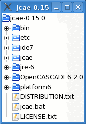
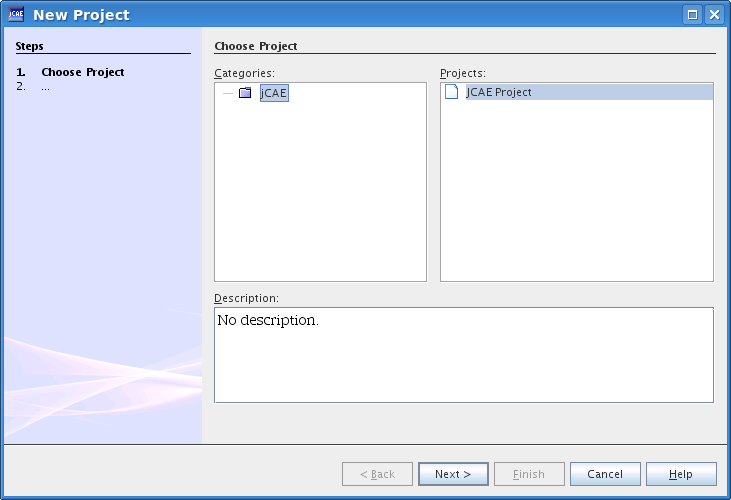
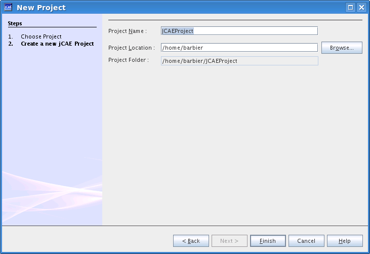

Once unzipped the jCAE installation look like this:
To start jCAE on Microsoft Windows double click on the jcae.bat
file in the root directory of jCAE. On Linux run the jcae.sh
script. You get the following screen:
Buttons at the top-right corner are hidden to narrow down screenshots, they are explained in details here.
One has to start a new jCAE project, through the File|New Project menu. You get a wizard project in which you have to mention project name and storage location as presented in next figures.
Select name and location of the project:
Then click on Finish button. Basic structure of a project is generated in the upper leftmost tree. A project is composed of two basic modules: CAD module and meshing module.